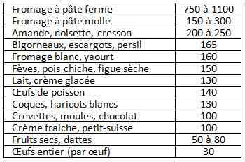

Bienvenue Sur Medical Education
Hypocalcémie
Spécialité : metabolisme /
Points importants
- La régulation calcique est importante pour le fonctionnement cellulaire, la transmission neuronale, la stabilité membranaire, la structure osseuse, la coagulation sanguine et les échanges intracellulaires
- Manifestations exclusivement neuromusculaires : anomalies sensitivomotrices, électromyographiques et électriques ECG
- Fréquente chez le sujet âgé (hypovitaminose D chronique)
- Peut être témoin de maladie grave (pancréatite aiguë, rhabdomyolyse)
- Diagnostic biologique : calcémie ionisée (correction à partir du taux de protides et/ou d'albumine)
- Risque immédiat cardio-vasculaire : trouble du rythme et mort subite
Présentation clinique / CIMU
SIGNES FONCTIONNELS
Spécifiques
-
Troubles neurologiques :
- dysesthésies
- spasmes, fasciculations, crampes musculaires
- signe de Trousseau
- tétanie
- crise convulsive
-
Trouble psychiatriques :
- anxiété, dépression
- syndrome confusionnel, syndrome démentiel
-
Troubles cardiovasculaires :
- palpitations
- syncope - troubles du rythme
- HoTA - collapsus
- insuffisance cardiaque
- douleur angineuse
- mort subite
CONTEXTE
Terrain
- Sexe ratio = 1
- Tout âge
Traitement usuel
-
Long cours :
- bisphosphonates
- digitaliques
- antiépileptiques
-
Récent :
- chélateurs du Ca++
- injection de produit de contraste
- oestrogènes
- diurétiques de l'anse
- antibiotiques néphrotoxiques (aminosides)
- amphotéricine B
Antécédents
- Troubles anxieux
- Chirurgie thyroïdienne ou parathyroïdienne, radiothérapie cervicale, traumatisme cervical
- Insuffisance rénale chronique
- Alcoolisme/insuffisance hépato-biliaire
- Pancréatite
- Hyperphosphorémie
- Hypovitaminose D : rachitisme, personne âgée
Facteurs de risque
- Lié au terrain sous-jacent = cardiopathie sous-jacente
- Traitement au long cours par digitaliques
-
Association avec d'autres troubles métaboliques :
- hyperkaliémie
- hypermagnésémie
- alcalose
Circonstances de survenue
- Iatrogénique
- Chronique selon terrain prédisposant (insuffisance rénale chronique, hypovitaminose D)
EXAMEN CLINIQUE
Etat général
- Dénutrition, rachitisme
-
Signes d'hypocalcémie chronique :
- cataracte
- peau sèche, psoriasis
- ongles cassants, friables
- prurit chronique
- mauvaise dentition
Signes spécifiques
- Confusion, démence
- Syndrome extra-pyramidal
- Convulsions
- Hallucinations
- Crise de tétanie
-
Signes évocateurs :
- signe de Chvostek provoqué (stimulation du nerf facial - 2 cm région du tragus auriculaire : contraction de la joue et de la partie médiane de la lèvre supérieure, en réponse à la percussion)
- signes de Trousseau spontanés ou provoqués par prise tensionnelle (gonflement du brassard à tension, ischémie périphérique dans le territoire médian et ulnaire : contracture musculaire des mains [main d'accoucheur de Trousseau] avec flexion des MCP et extension des IP)
- Sibilants, stridor (en rapport avec la contraction des muscles lisses)
-
Tableau digestif :
- diarrhée
- colique intestinale
- dysphagie
En rapport avec des signes étiologiques
- Pancréatite
- Rachitisme, carence d'apport en vitamine D
- Insuffisance rénale chronique (recherche de fistule artério-veineuse)
EXAMENS PARACLINIQUES SIMPLES
- Systématique, ECG : recherche un allongement du QT, un trouble du rythme
CIMU
2 situations
-
Toujours utiliser la calcémie corrigée, ou au mieux la calcémie ionisée :
- situation A : calcémie > 1,8 mmol/L et asymptomatique (pas de signes électriques)
- situation B : calcémie < 1,8 mmol/L ou symptomatique (clinique et/ou électriques)
CIMU
- Situation A : tri 4
- Situation B : tri 2 - 1
Signes paracliniques
- Situation A : calcémie > 1,8 mmol/L et asymptomatique (pas de signes électriques)
- Situation B : calcémie < 1,8 mmol/L ou symptomatique (clinique et/ou électriques)
BIOLOGIQUE
Situations A/B
- Ionogramme sanguin - urée - créatinine (éliminer insuffisance rénale - hyperkaliémie associée)
-
A visée diagnostique :
- calcémie, calcémie corrigée : basse
- protidémie, albuminémie permettant le calcul de la calcémie corrigée
- Ca corrigé = Ca mesuré - 0,02 x (albumine - 40)
Selon le contexte
- Lipase et bilan hépatique avec hémostase (pancréatite)
- Gazométrie artérielle (acidose)
- Magnésium, phosphores
Diagnostic étiologique
Hypoalbuminémie
- Cirrhose
- Syndrome néphrotique
- Malnutrition
- Brûlures
- Sepsis
Hypomagnésémie
- Pancréatite
- Iatrogénique : aminosides, amphotéricine B, diurétiques anse
- Alcoolisme
- Malnutrition
Hyperphosphatémie
- Insuffisance rénale chronique
- Rhabdomyolyse
- Ischémie mésentérique
Déficience/résistance PTH
- Etiologies congénitales : syndrome DiGeorge
- Hypoparathyroïdie idiopathique
- Pathologie infiltrative : maladie Wilson, métastases
- Pseudohypothyroïdie = résistance PTH (maladie Albright)
Déficience/résistance vitamine D
- Malnutrition, rachitisme
- Syndrome hépatorénal
Augmentation du taux de citrate extracellulaire
- Transfusion sanguine massive
- Injection produite contraste radiologique
Multifactoriels
- Pancréatite aiguë
- Rhabdomyolyse
- Sepsis
- Toxic shock syndrome
- Néoplasies : métastases ostéoblastiques (cancers sein/prostate), syndrome lyse tumorale
- Insuffisances hépatique/rénale
- Pathologies infiltrant la parathyroïde : sarcoïdose, tuberculose, hémochromatose
Iatrogénique
- Inhibiteurs de la pompe à protons IPP (diminue l'absorption du calcium)
- Inhibiteurs de recapture sérotoninergique (antagonisent l'effet du calcium sur le muscle lisse)
- Bisphosphonates (chélateur du calcium)
- Phénobarbital et phénytoïne (diminue la réabsorption du calcium au niveau intestinal, stimule le catabolisme de la vitamine D)
- Foscarnet, éthylène glycol (complexes avec calcium)
- Œstrogènes (inhibe la résorption osseuse)
- Aluminium, alcool (supprime PTH)
Effets post-opératoires
- Résection d'adénome parathyroïdien (hypocalcémie transitoire)
- Hypoperfusion parathyroïdienne : chirurgie ou traumatique
- Pancréatectomie
Diagnostic différentiel
CLINIQUE
- Crise d'hystérie/crise d'angoisse/attaque de panique
- Crise de spasmophilie
- Hypokaliémie
- Troubles du rythme cardiaque
- Convulsion
- Accident ischémique transitoire
PARACLINIQUE
- Fausse hypocalcémie en cas d'hypoalbuminémie
Traitement
- Situation A : calcémie > 1,8 mmol/L et asymptomatique (pas de signes électriques)
- Situation B : calcémie < 1,8 mmol/L ou symptomatique (clinique et/ou électriques)
TRAITEMENT PREHOSPITALIER / INTRAHOSPITALIER
Stabilisation initiale
-
Situation A :
- traitement ambulatoire possible
- supplémentation orale : 1000 à 2000 mg/j
- prévoir un bilan étiologique rapidement
-
Situation B :
- prévenir le risque cardio-vasculaire immédiat
-
traitement d'attaque :
- gluconate de Calcium : 200 à 300 mg
- dilué dans 100 mL de sérum glucosé à 5%
- perfusé sur voie périphérique en 10 min
-
traitement d'entretien :
- gluconate de Calcium
- attention : le Gluconate de calcium injectable est contre-indiqué en cas de traitement digitalique associé
- dilué dans 500 mL de sérum glucosé à 5%
- 0,5 à 2 mg/kg/h sur voie veineuse centrale
- adapté à la calcémie de contrôle à 1 à 2 heures
Suivi du traitement
-
Phase aiguë :
- situation A : traitement ambulatoire
-
situation B : traitement parentéral :
- surveillance scopique
- calcémie rapprochée à 1 à 2 heures après traitement d'attaque permettant la décision de mise en route du traitement d'entretien
MEDICAMENTS
-
Sels de calcium : comprimés ou sachets (dosage à 500 ou 1000 mg) :
- Cacit®, 500 ou 1000 mg, cp effervescents
- Calcidose®, 500, sachets
- Calciprat® , 500 ou 1000 mg, cp à sucer
-
Sels de calcium + vitamine D : comprimés ou sachets (dosage à 500 ou 1000 mg de calcium, dosage à 400, 800, ou 880 UI de vitamine D) :
- Cacit Vit. D®, 1000 mg de calcium, 880 UI de Vit D, sachets
- Calcidose Vit. D®, 500 mg de calcium, 400 UI de Vit D, sachets
- Calciprat D3®, 500 mg de calcium, 400 UI de Vit D, comprimés
Surveillance
- Situation A : calcémie > 1,8 mmol/L et asymptomatique (pas de signes électriques)
- Situation B : calcémie < 1,8 mmol/L ou symptomatique (clinique et/ou électriques)
Situation A
- Traitement ambulatoire
- Surveillance calcémie et calciurie hebdomadaire, jusqu'à la consultation avec le médecin traitant
- Risque d'hypercalcémie, hypercalciurie, majoré en cas de co-prescription avec la vitamine D (donc éviter l'association Calcium - vitamine D en prescription de sortie sans preuve ou forte suspicion clinique d'hypovitaminose D associée)
Situation B
- Traitement parentéral
- Surveillance scopique de la fonction cardiaque
- Calcémie rapprochée (adaptation et efficacité thérapeutique)
Devenir / orientation
- Situation A : calcémie > 1,8 mmol/L et asymptomatique (pas de signes électriques)
- Situation B : calcémie < 1,8 mmol/L ou symptomatique (clinique et/ou électriques)
CRITERES D'ADMISSION
- Situation B : en service soins continus
CRITERES DE SORTIE
- Situation A
ORDONNANCE DE SORTIE
- Calcium per os : 1000 à 2000 mg/j
- Supplémentation vitaminique en cas d'hypovitaminose D
RECOMMANDATIONS DE SORTIE
-
Prévoir un bilan étiologique rapidement à adresser au médecin traitant :
- calcémie - phosphorémie
- calciurie
- vitamine D sérique
- parathormone
- Alimentation riche en calcium [Fromage et produits laitiers +++]
 _180 Tableau Aliments riches en calcium
Mécanisme / description
- Régulation calcique sous la dépendance de la parathormone (PTH), vitamine D et calcitonine
- 99% du calcium est dans l'os
- 1% du calcium est dans le secteur extracellulaire
- 50% de calcium libre, forme ionisée (1-1,5 mmol/L)
- 40% est complexé avec les protéines (particulièrement l'albumine)
- 10% est complexé avec les anions (citrates)
- L'homéostasie est maintenue par le gradient transmembranaire entre secteurs intra et extracellulaire, dépendant de la présence de phosphates en intracellulaire
- Le taux de calcium extracellulaire est maintenu à 8,7 - 10,4 mg/dL
- Les variations dépendent du pH sanguin, des protéines et du taux d'anions et des mécanismes de régulation calcique
-
PTH :
- PTH = hormone de régulation du calcium extracellulaire
- cible osseuse et rénale
- action hypercalcémiante
- permet la mobilisation du phosphate de calcium osseux, l'élimination urinaire du phosphore, la réabsorption du calcium urinaire, la synthèse de la vitamine 1,25-(OH)2D3
-
Vitamine D3 ou vitamine 1,25-(OH)2D3 :
- responsable de l'absorption entérale du calcium et du phosphore
- permet la minéralisation osseuse
- action hypercalcémiante
-
Deux types d'hypocalcémie :
-
hypocalcémie totale :
- déficit portant sur le pool calcique total circulant
- baisse concomitante du calcium ionisé et du calcium lié aux protéines
-
étiologies :
- carence d'apport (personne âgée), cause la plus fréquente
- hypoparathyroïdie
- hypovitaminose D
-
hypocalcémie totale :
-
Hypocalcémie ionisée : pool calcique circulant variable, normal ou élevé :
- modification du rapport calcémie ionisée/calcémie
-
correspond à certains états pathologiques :
- hyperprotidémie importante (myélome, syndrome inflammatoire)
- alcalose (hyperventilation)
- complexation aux bicarbonates : alcalose métabolique
- complexation aux phosphates : hyperphosphorémie et insuffisance rénale
- complexation aux acides gras libres dans le cadre de la pancréatite aiguë
Bibliographie
- Dyscalcémie, urgences 2007, D.Trewick, F.Vignaud, G.Potel, E.Batard
- Dyscalcémie aux urgences, C. Guitton, B. Renard, L. Gabillet, D. Villers, Réanimation 2002 ; 11 : 493-501
- Hypocalcemia, Suneja M., Muster H., Pegoraro A., eMedicine Specialties > Nephrology > Acid-Base, Fluid, and Electrolyte Disorders, http://emedicine.medscape.com/article/241893-overview
- Harrison, Médecine interne, 15e édition
- Manuel de sémiologie médicale, Moline J., éd. Masson
- Guide de thérapeutique, 3e édition, éd. Masson
- Atlas de poche de Physiologie, 3e édition, St. Silbernagl, A. Despopoulos, éd. Flammarion
-
Guide pratique des médicaments, Dorosz 2007, éd. Maloine
Auteur(s) : Quentin SILVE, Albéric GAYET